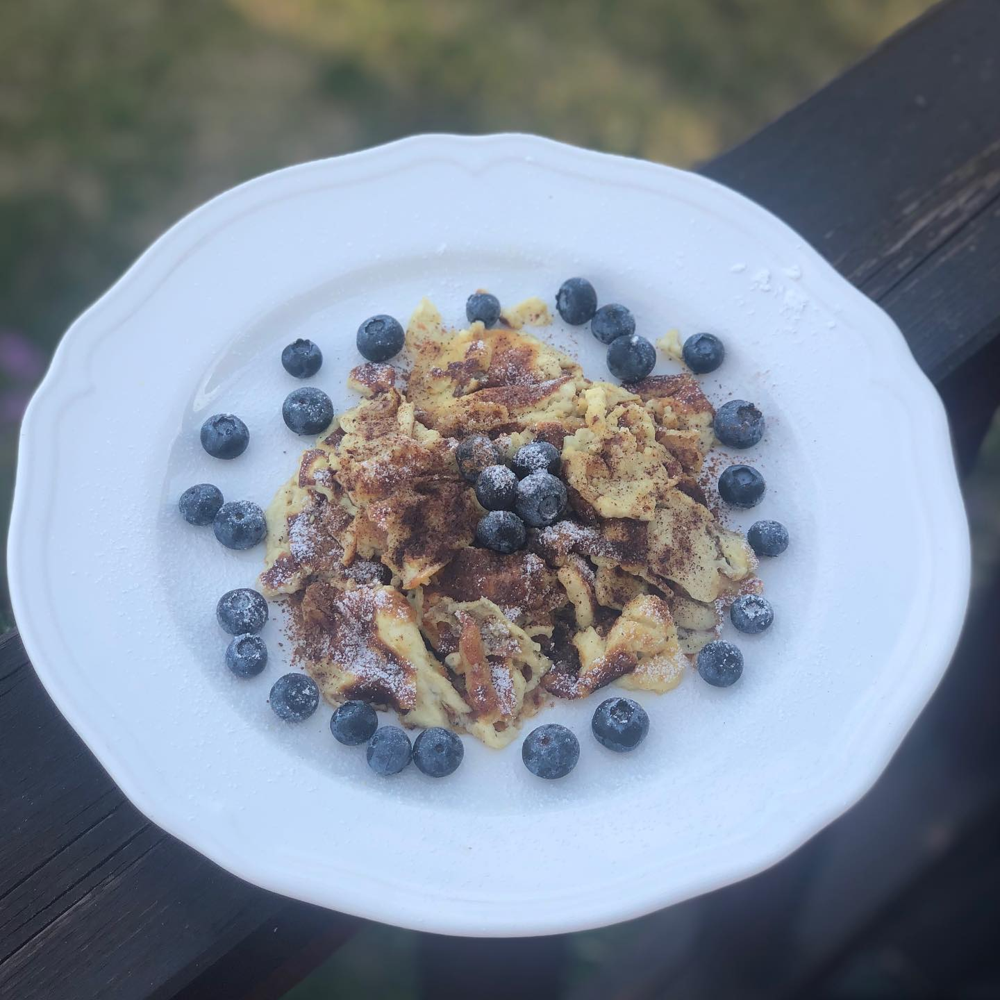

Tvarohový trhanec podľa @matka_v_kuchyni — Normy Jedál
Tvarohový trhanec.
.
"Sladký" start do nového dne👍. Vhodné pro děti od jednoho roku nebo podle toho, kdy jste jednotlivé suroviny zařadili do jídelníčku.
.
Na dvě porce:
1 vanička tvarohu (250g)
1 balíček vanilkového pudingu
120ml mléka
2 vajíčka
1 lžička skořice na posypání
Ovoce na ozdobení, případně na rozvar
.
Postup je jednoduchý:
1️⃣Tvaroh, mléko, pudingový prášek a vajíčka smícháme v jedné míse.
2️⃣Na pánvi opečeme z jedné strany a při otočení na druhou roztrháme na menší kousky a dopečeme.
.
Můžete posypat skořicí, cukrem, oříšky, zalít ovocným rozvarem, javorovým sirupem... Cokoliv dle věku, možnosti dítěte a také vašim stravovacím preferencím.
.
Krásné úterý ☀️.
.
#tvarohovytrhanec #varimedetem #varimezdrave #prikrmy #svacinka #snidane #bezlepku #matkavkuchyni